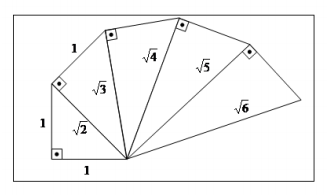

CAPÍTULO 2: O TEOREMA DE PITÁGORAS E OS NÚMEROS REAIS NO CONTEXTO DA INDÚSTRIA DA CONSTRUÇÃO CIVIL
Contextualizando
A indústria da construção civil é uma das atividades econômicas mais antigas da humanidade e foi se desenvolvendo ao longo dos tempos em dois ramos específicos e distintos, que se classificam em indústria da construção civil leve e indústria da construção civil pesada.
A indústria da construção civil leve engloba todos os empreendimentos imobiliários, obras de edificações, tais como casas, templos e todos os tipos de edifícios (obras que não são de infraestruturas). A construção pesada está voltada para obras de infraestrutura em um amplo espectro de segmentos (infraestrutura de transportes, saneamento, energia elétrica, redes de transporte por dutos – oleodutos, gasodutos; minerodutos; obras de concretagem de estruturas; indústria de mármores e granitos, instalações industriais de grande porte, instalações desportivas, infraestrutura de obras públicas; obras marítimas e fluviais, etc.).
As atividades da construção pesada são caracterizadas por uma substantiva intensidade em capital e tecnologia e pela necessidade de se operar em grande escala.
Em qualquer obra da construção civil, os profissionais necessitam de conhecimentos matemáticos, pois os processos utilizados valem-se de cálculos matemáticos, em especial, os geométricos, para serem realizados, desde a elaboração da planta, até o acabamento da obra.
 “Durante o levantamento de paredes de uma casa, por exemplo, o pedreiro se depara com um
problema matemático, que é calcular a área do tijolo,
multiplicando seu comprimento por sua largura, e divide 1
metro quadrado pelo produto obtido, sendo assim ele encontra
quantos tijolos será necessário para o levantamento de cada
metro quadrado da parede. Depois de levantadas as paredes, o
pedreiro inicia a etapa da construção da cobertura da casa e,
depois de escolher o tipo da telha, terá que calcular a
porcentagem da inclinação. O cálculo da inclinação é feito por
meio de uma relação entre altura e comprimento, essa inclinação depende do tipo da telha.
Depois de concluir esta etapa, o pedreiro efetua o cálculo da quantidade de telhas necessárias
para a cobertura do telhado e, para isso acontecer, ele leva em conta a área útil de cada tipo
de telha.”
“Durante o levantamento de paredes de uma casa, por exemplo, o pedreiro se depara com um
problema matemático, que é calcular a área do tijolo,
multiplicando seu comprimento por sua largura, e divide 1
metro quadrado pelo produto obtido, sendo assim ele encontra
quantos tijolos será necessário para o levantamento de cada
metro quadrado da parede. Depois de levantadas as paredes, o
pedreiro inicia a etapa da construção da cobertura da casa e,
depois de escolher o tipo da telha, terá que calcular a
porcentagem da inclinação. O cálculo da inclinação é feito por
meio de uma relação entre altura e comprimento, essa inclinação depende do tipo da telha.
Depois de concluir esta etapa, o pedreiro efetua o cálculo da quantidade de telhas necessárias
para a cobertura do telhado e, para isso acontecer, ele leva em conta a área útil de cada tipo
de telha.”
O Teorema de Pitágoras “é usado desde o início da obra, em sua demarcação inicial até o acabamento final. Ao marcarem 30 cm e 40 cm em duas laterais de paredes que se interceptam e depois unirem esses pontos para encontrarem uma medida equivalente a 50 cm, os pedreiros conseguem um ângulo reto, isto é uma aplicação prática do Teorema de Pitágoras. É o que na linguagem dos pedreiros é chamado de “deixar no esquadro””.
Qual a origem do Teorema de Pitágoras e como resolver problemas aplicando esse conhecimento matemático?
Caro aluno!
Nesse capítulo, você vai conhecer o Teorema de Pitágoras, suas aplicações na resolução de problemas cotidianos e da Indústria da Construção Civil que envolvem triângulos retângulos.
(RE)CONSTRUINDO CONHECIMENTOS
Para conhecer o Teorema de Pitágoras, sugerimos que você realize a atividade prática proposta a seguir.
ATIVIDADE PRÁTICA:
DESCOBRINDO O TEOREMA DE PITÁGORAS
Material: uma folha de papel quadriculado, régua, lápis borracha e tesoura.
Siga passo a passo, as instruções:
Desenhe três quadrados no papel quadriculado: um com 3 unidades de lado, outro com 4 e o outro com 5 unidades;
Com um traço mais forte, marque um dos lados de cada quadrado conforme o desenho a seguir;
Una os vértices dos três quadrados, formando um triângulo com os lados marcados, conforme o desenho abaixo, e cole no espaço marcado logo a seguir;
Calcule a área de cada quadrado, tomando cada quadradinho do quadriculado como a unidade de área e escreva-a dentro de cada quadrado a sua respectiva área.
Observe a figura formada, calcule a área de cada quadrado e relacione as áreas dos três quadrados:
O triângulo formado é um triângulo retângulo. Os lados que medem 3 e 4 unidades são os catetos e o lado que mede 5 unidades é a hipotenusa.
Relacionando os três lados do triângulo que são lados dos quadrados, podemos relacionar as suas áreas e verificar que 25 u.a.= 9 u.a. + 16 u.a. (u.a. significa unidade de área).
Esta relação refere o famoso Teorema de Pitágoras.
O TEOREMA DE PITÁGORAS
Pitágoras foi um importante matemático e filósofo grego. Nasceu no ano de 570 a.C. na ilha de Samos, na região da Ásia Menor (Magna Grécia). Provavelmente, morreu em 497 ou 496 a.C. em Metaponto (região sul da Itália). Enquanto visitava o Egito, impressionado com as pirâmides, desenvolveu o famoso Teorema de Pitágoras.
O Teorema de Pitágoras é considerado uma das principais criações da Matemática e descreve uma relação matemática entre os comprimentos dos lados de um triângulo retângulo.
O Teorema: O Teorema: Em qualquer triângulo retângulo, o quadrado do comprimento da hipotenusa é igual à soma dos quadrados dos comprimentos dos catetos. O Teorema:
Observe ao triângulo retângulo, verifique o ângulo reto, a representa a medida do comprimento da hipotenusa, b e c representam as medidas do comprimento dos catetos.
Você pode afirmar, então, que a2 = b2 + c2 , que você concluiu na atividade prática e verificar o enunciado do teorema.
Conhecendo os comprimentos de dois lados de um triângulo retângulo, pelo teorema de Pitágoras, você pode calcular o comprimento do terceiro lado.
Veja alguns exemplos
No quadro a seguir, você tem três triângulos retângulos representados. Use a equação do Teorema de Pitágoras, a2 = b2 + c2 , substitua os dados, faça os cálculos e complete as lacunas com o dado que falta em cada triângulo. Depois, confira as respostas.

RESPOSTAS DO QUADRO
15 a) 25 a) 20
12 b) 20 b) 16
9 c) 15 c) 12
PARA SABER MAIS...
O Teorema de Pitágoras é uma relação entre as medidas dos lados de qualquer triângulo retângulo, e foi descoberto alguns séculos antes de Cristo.
Da mesma maneira que os antigos egípcios mediam suas terras, após as constantes enchentes do rio Nilo, utilizando-se de uma corda com 13 nós e 12 espaços (triângulo pitagórico 3, 4 e 5); o pedreiro utiliza-se dessa mesma relação para demarcar a área a ser construída dentro do terreno. Depois de esticada uma linha paralela (à frente do terreno, o pedreiro estica uma nova linha (b), provisoriamente. Então crava uma estaca (e-1) a 3 metros da primeira linha e, uma outra estaca (e-2), 4 metros sobre a linha paralela. Medindo a distância (c) entre as duas estacas o valor correto deverá ser de 5 metros. Se a medida for maior ou menor que 5 metros, a primeira estaca terá que ser deslocada até que se consiga essa medida.
O Teorema de Pitágoras é aplicado na resolução de problemas que são muito comuns na indústria da construção civil.
Analise os exemplos a seguir e acompanhe a sua resolução: Em uma obra, é necessário içar um cabo de aço entre dois prédios, como demonstra a imagem a seguir. Qual é a diferença entre a altura dos prédios? Observando a figura, a verifica-se que a medida do segmento AC é a diferença entre as alturas dos prédios. No triângulo retângulo ABC, AB (1,7m) é a hipotenusa, BC (1,5m) é um cateto e AC é outro cateto e é a medida que se quer achar.
Resposta: A diferença entre a altura dos prédios é de 0,8m
2 -Para realizar o conserto de um telhado é necessário saber qual é o comprimento ideal de uma escada. Observando a figura a seguir, percebe-se que o edifício mede 15 metros de altura e a escada estará localizada a 8 metros da sua base.

Qual será o comprimento da escada?
Considere o triângulo retângulo ABC, em que AB é a hipotenusa, AC e BC são os catetos que medem respectivamente 15m e 8m.
Encontra-se o valor da valor da hipotenusa que é o tamanho da escada, aplicando o Teorema de Pitágoras, substituindo os dados e fazendo os cálculos,
OS NÚMEROS IRRACIONAIS E OS NÚMEROS REAIS
Você já conheceu o número irracional utilzando o Teorema de Pitágoras você vai conhecer os números irracionais na forma de radical e estudar o Conjunto dos Números Reais.
Observe o quadrado de uma unidade de lado desenhado a seguir e o triângulo retângulo em vermelho cujos catetos são os lados do quadrado e iguais a 1 e a hipotenusa é a diagonal do quadrado. A diagonal do quadrado foi calculada, utilizando o Teorema de Pitágoras e é reprsentada pelo número √2.
O número √2 não é um número exato, porque √1 = 1 e a √4 = 2 e entre os números 1 e 2 somente existem números decinais.e como o número √2 está entre √1 e a √4, esse número é maior do que 1 e menor que 2. Com computadores muitopotentes, a √2 foi calculada com muitas casas decimais sem que se encontrasse período. Então a √2 é um número irracional.
Lembre o número que π é um número que pertence ao conjunto dos Números Irracionais (I) como já foi visto anteriormente. Assim, como o número √2, os números √3, √5, √7 também são números pertencentes ao conjunto dos Números Irracionais
Unindo o Conjunto dos números Racionais (Q) e o Conjunto dos Números Irracionais (I) obtém-se o Conjunto dos Números Reais cuja representação é a Reta.
Em símbolos: R = Q I
PARA SABER MAIS ...
A ESPIRAL PITAGÓRICA E A LOCALIZAÇÃO DOS NÚMEROS IRRACIONAIS NA RETA
 Observe a Espiral Pitagórica. A partir da reprsentação geométrica da √2, tomando-a como hipotenusa de um novo triângulo, calcula-se a √3. Formando novos triângulos retângulos, calculando as hipotenusas pelo Teorema de Pitágoras, tem-se os números √2, √3,√4, √5, √6, esse é um processo infinito. Nessa sequência numérica, observe que há números racionais como a√4 que é o número 2 e √2, √3,√4, √5, √6que são números irracionais.
Observe a localização dos números calculados na reta numérica, destacando os irracionais localizados nos intervalos entre os números inteiros.
O CONJUNTO DOS NÚMEROS REAIS E O DIAGRAMA DE VENN
No Digrama de Venn representa o Conjunto dos Números Reais que contém dos demais conjuntos numéricos N, Z, Q e I.
Observe que o Conjunto dos Números Naturais (N) está contino no Conjunto dos Números Inteiros (Z) que está contido no Conjunto dos Números Racionais (Q) e que, unidos com o conjunto fod Números Irracionais (I), formam o Conjunto dos Números Reais. Observe,ainda, que não há elementos comuns nos onjuntos Q (dos racionais ) e I ( dos Irracionais).
PRATICANDO: REFLEXÃO E AÇÃO
A figura abaixo mostra um muro que tem 3m de altura. Sabendo-se que o pé de uma escada está a 4m do muro. Qual é o comprimento da escada?
Um terreno tem formato retangular, de modo que um de seus lados mede 30 metros e o outro mede 40 metros. É preciso construir uma cerca dividindo terreno que passe pela sua diagonal. Considere que cada metro de cerca custa R$ 12,0.
Oberve o desenho a seguir e responda:
Quanto medirá a cerca?
A figura abaixo, que representa o projeto de uma escada com 5 degraus de mesma altura, o comprimento total do corrimão é igual a:
O QUE APRENDI
Nesse capítulo, realizando uma atividade prática, aprendi o que é o Teorema de Pitágoras, sua origem e suas aplicações, tanto na resolução de problemas cotidianos e na indústria da construção civil, quanto nos processos da própria Matemática como a construção da Espiral Pitagórica que possibilita reconhecer os números irracionais. Aprendemos, também, um novo conjunto numérico, o Conjunto dos Números Reais e sua representação, a reta numérica.
RESPOSTAS DA SEÇÃO PRATICANDO
5m 2) 50m 3) 150cm